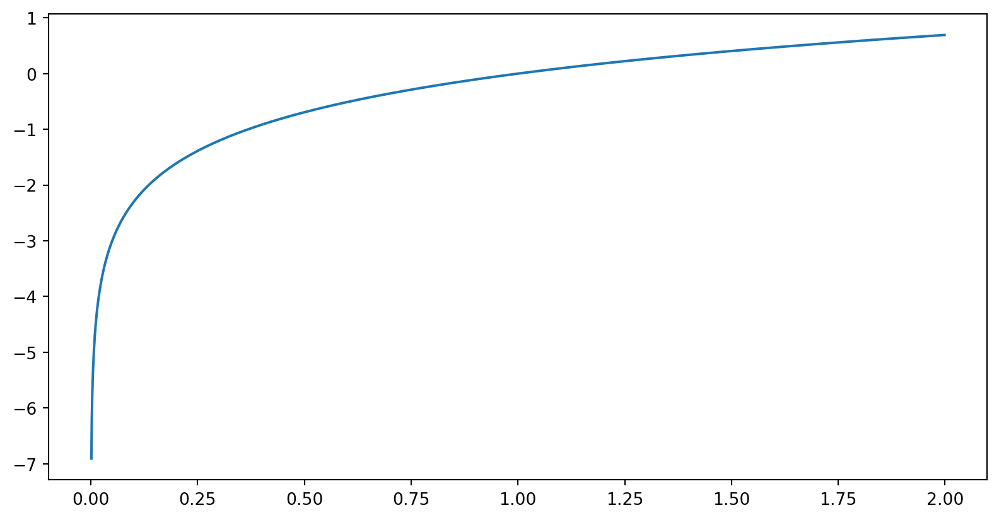

The case of Vyborg
UEF
2024-09-26

| column | description |
|---|---|
| plot_number | Plot number |
| taxpayer_men | Men paying poll tax |
| taxpayer_women | Women paying poll tax |
| no_tax_men | Men exempt from poll tax |
| no_tax_women | Women exempt from poll tax |
| in_russia_men | Men legally residing in Russia proper |
| in_russia_women | Women legally residing in Russia proper |
| total_men | Total men |
| total_women | Total women |
| independent | Civil servants, entrepreneurs, and financially independent |
| white_collar | White collar workers |
| worker_industry | Workers in industry |
| worker_other | Other workers |
| servants | Servants |
| other | Other employment status |
| non_resident | Resident elsewhere |
| orthodox | Orthodox |
| other_christian | Non-Lutheran and non-Orthodox Christian |
| other_religion | Other religions |
| draftable | 21-year-old males eligible for draft |
\[ P_{Lutheran}=(P_{total\_men}+P_{total\_women}) −(P_{Orthodox}+P_{other\_Christian}+P_{other\_religion}) \]
flowchart TB
A["Data collection and
digitizing"] --> B["Georeferencing and
combining data"]
B --> C["KDE"]
C --> D["Combining and
selecting data"]
D --> E["Data normalisation"]
E --> F["Training regression model"]
F --> G["Visualisation"]
G --> H{"Assessing model"}
H --> I["Analysis of
results"]
H --> F
| District | 1822 | 1880 |
|---|---|---|
| Centre | 1192 | 2506 |
| St. Anna | 244 | 117 |
| Vyborg suburb | 642 | 756 |
| St Petersburg suburb | 1512 | 2685 |